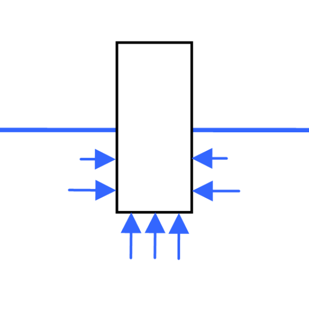

Origine
Expérience de physique
Lorsqu'on plonge un objet suspendu à une balance dans un liquide, on s’aperçoit sur que la valeur indiquée par la balance diminue.
Cela se passe comme si le liquide s'opposait au poids de l'objet, le "soulageait".
Explication
L'objet plongé dans un liquide subit la pression de ce liquide.
Comme la pression du liquide augmente avec la profondeur, les forces qui s'appliquent à l'objet augmentent également avec la profondeur

Il en résulte une force exercée par le liquide sur l'objet, dirigée verticalement et vers haut
Limites
Si l'objet n'est pas entièrement immergé, cette force ne s'applique pas à tout l'objet, mais uniquement sur la partie immergée de l'objet.

Pour un navire, on appelle cette partie immergée la carène.